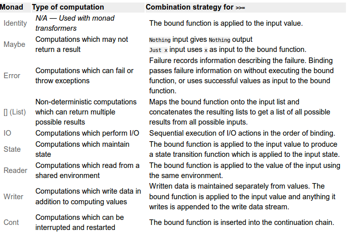

Functors, Monads, Applicatives and Monoids
Table of Contents
1 Functors, Monads, Applicatives and Monoids
The concepts of functors, monads and applicative comes from category theory.
1.1 Functors
Functors is a prelude class for types which the function fmap is defined. The function fmap is a generalization of map function.
class Functor f where fmap :: (a -> b) -> f a -> f b
- f is a parameterized data type
- (a -> b ) Is a polymorphic function that takes a as parameter and returns b
- f a : a is a parameter, f wraps a
- f b : b is a parameter wrapped by f
A functor must satisfy the following operations (aka functor laws):
-- id is the identity function: id :: a -> a id x = x fmap (f . g) = fmap f . fmap g -- Composition law fmap id = id -- Identity law
The following functors defined in Haskell standard library prelude.hs. The function fmap is defined for each of the functor types.
List
instance Functor [] where fmap = map
Maybe
data Maybe x = Nothing | Just x instance Functor Maybe where fmap f Nothing = Nothing fmap f (Just x) = Just (f x)
Either
data Either c d = Left c | Right d instance Functor (Either a) where fmap f (Left a) = Left a fmap f (Right b) = Right (f b)
IO
instance Functor IO where fmap f x = x >>= (return . f)
Examples:
The most well known functor is the list functor:
> let f x = 10*x -2 > fmap f [1, 2, 3, 10] [8,18,28,98] > > fmap f (fmap f [1, 2, 3, 10]) [78,178,278,978] >
The Maybe type is a functor which the return value is non deterministic that returns a value if the computation is successful or return a null value Nothing if the computation fails. It is useful to avoid boilerplate successive null checkings and avoid null checking error.
> > let add10 x = x + 10 > > > fmap add10 Nothing Nothing > > > > fmap add10 $ fmap add10 Nothing Nothing > > > fmap add10 (Just 10) Just 20 > > > fmap add10 $ fmap add10 (Just 10) Just 30 > >
Functor Laws Testing
-- fmap id == id > fmap id [1, 2, 3] == id [1, 2, 3] True > > > let testLaw_id functor = fmap id functor == id functor > testLaw_id [1, 2, 3] True > testLaw_id [] True > -- Testing for Maybe functor > testLaw_id Nothing True > testLaw_id (Just 10) True > > -- Composition Testing -- fmap (f . g) = fmap f . fmap g -- Composition law > let f x = x + 1 > let g x = 2*x > > > fmap (f . g) [1, 2, 3] [3,5,7] > > > :t (fmap f) (fmap f) :: (Functor f, Num b) => f b -> f b > > > fmap (f . g) [1, 2, 3] == ((fmap f) . (fmap g)) [1, 2, 3] True > > > let test_fcomp f g functor = fmap (f . g) functor == ((fmap f) . (fmap g)) functor > > test_fcomp f g (Just 10) True > > test_fcomp f g Nothing True > >
To list all instances of the Functor class:
> > :i Functor class Functor f where fmap :: (a -> b) -> f a -> f b (<$) :: a -> f b -> f a -- Defined in `GHC.Base' instance Functor (Either a) -- Defined in `Data.Either' instance Functor Maybe -- Defined in `Data.Maybe' instance Functor ZipList -- Defined in `Control.Applicative' instance Monad m => Functor (WrappedMonad m) -- Defined in `Control.Applicative' instance Functor (Const m) -- Defined in `Control.Applicative' instance Functor [] -- Defined in `GHC.Base' instance Functor IO -- Defined in `GHC.Base' instance Functor ((->) r) -- Defined in `GHC.Base' instance Functor ((,) a) -- Defined in `GHC.Base'
References:
1.2 Monads
1.2.1 Overview
Monads in Haskell are used to perform IO, State, Parallelism, Exception Handling, parallelism, continuations and coroutines.
Most common applications of monads include:
- Representing failure and avoiding null checking using Maybe or Either monad
- Nondeterminism using List monad to represent carrying multiple values
- State using State monad
- Read-only environment using Reader monad
- I/O using IO monad
A monad is defined by three things:
- a type constructor m that wraps a, parameter a;
- a return operation: takes a value from a plain type and puts it into a monadic container using the constructor, creating a monadic value. The return operator must not be confused with the "return" from a function in a imperative language. This operator is also known as unit, lift, pure and point. It is a polymorphic constructor.
- a bind operator (>>=). It takes as its arguments a monadic value and a function from a plain type to a monadic value, and returns a new monadic value.
- A monadic function is a function which returns a Monad (a -> m b)
A type class is an interface which is a set of functions and type signatures. Each type derived from a type class must implement the functions described with the same type signatures and same name as described in the interface/type class. It is similar to a Java interface.
In Haskell, the Monad type class is used to implement monads. It is provided by the Control.Monad module which is included in the Prelude. The class has the following methods:
class Monad m where return :: a -> m a -- Constructor (aka unit, lift) --Not a keyword, but a unfortunate and misleading name. (>>=) :: m a -> (a -> m b) -> m b -- Bind operator (>>) :: m a -> m b -> m b fail :: String -> m a
Some Haskell Monads
- IO Monads - Used for output IO
- Maybe and Either - Error handling and avoinding null checking
- List Monad - One of the most widely known monads
- Writer Monad
- Reader Monad
- State Monad
1.2.2 Bind Operator
In a imperative language the bind operator could be described as below:
-- Operator (>>=)
func: Is a monadic function ->
func :: a -> m b
In Haskell:
m a >>= func == m b
In a Imperative Language
bind (m a, func) == m b
In a Object Orientated language:
(m a).bind( func) == m b
1.2.3 Monad Laws
All monads must satisfy the monadic laws:
In Haskell, all instances of the Monad type class (and thus all implementations of (>>=) and return) must obey the following three laws below:
Left identity:
Haskell
m >>= return = m
Imperative Language Equivalent
bind (m a, unit) == m a -- unit instead of return
Object Orientated Equivalent
(m a).bind(unit) == m a
Left unit
Haskell
return x >>= f == f x
Imperative Language Equivalent
bind(unit x, f) == f x -- f x == m a
Object Orientated Equivalent
(unit x).bind(f) == f x
Associativity
Haskell
(m >>= f) >>= g = m >>= (\x -> f x >>= g)
Imperative Language Equivalent
bind(bind(m a, f), g) == bind(m a, (\x -> bind(f x, g)))
Object Orientated Equivalent
(m a).bind(f).bind(g) == (m a).bind(\x -> (f x).bind(g))
Nice Version.
1. return >=> f == f 2. f >=> return == f 3. (f >=> g) >=> h == f >=> (g >=> h)
1.2.4 Selected Monad Implementations
List Monad
instance Monad [] where m >>= k = concat (map k m) return x = [x] fail s = []
Maybe Monad
data Maybe a = Nothing | Just a instance Monad Maybe where Just a >>= f = f a Nothing >>= _ = Nothing return a = Just a
(>>=) :: Maybe a -> (a -> Maybe b) -> Maybe b return :: a -> Maybe a
IO Monad
(>>=) :: IO a -> (a -> IO b) -> IO b return :: a -> IO b
1.2.5 Return - Type constructor
Return is polymorphic type constructor. This name return is misleading, it has nothing to do with the return from a function in a imperative language.
Examples:
> :t return return :: Monad m => a -> m a > > return 223.23 :: (Maybe Double) Just 223.23 > > > return Nothing Nothing > > return "el toro" :: (Either String String) Right "el toro" > > > > return "Nichola Tesla" :: (IO String) "Nichola Tesla" > >
1.2.6 Haskell Monads

From: https://wiki.haskell.org/All_About_Monads#What_is_a_monad.3F
Under this interpretation, the functions behave as follows:
- fmap applies a given function to every element in a container
- return packages an element into a container,
- join takes a container of containers and flattens it into a single container.
fmap :: (a -> b) -> M a -> M b -- functor return :: a -> M a join :: M (M a) -> M a
1.2.7 Monad function composition
(>=>) :: Monad m => (a -> m b) -> (b -> m c) -> a -> m c
[Under Construction]
return :: Monad m => a -> m a
{- Bind Operator -}
(>>=) :: (Monad m) => m a -> (a -> m b) -> m b
sequence :: Monad m => [m a] -> m [a]
sequence_ :: Monad m => [m a] -> m ()
mapM :: Monad m => (a -> m b) -> [a] -> m [b]
mapM_ :: Monad m => (a -> m b) -> [a] -> m ()
{- monad composition operator -}
(>=>) :: Monad m => (a -> m b) -> (b -> m c) -> a -> m c
f >=> g = \x -> f x >>= g
data Maybe a = Nothing | Just a deriving (Eq, Ord, Read, Show)
data Either a b = Left a | Right b deriving (Eq, Ord, Read, Show)
data Ordering = LT | EQ | GT deriving
(Eq, Ord, Bounded, Enum, Read, Show)
1.2.8 Sources
- http://mvanier.livejournal.com/4586.html
- https://jonaswesterlund.se/monads.html
- http://learnyouahaskell.com/for-a-few-monads-more
- http://learnyouahaskell.com/a-fistful-of-monads
- http://en.wikipedia.org/wiki/Monad_(functional_programming)
- https://wiki.haskell.org/All_About_Monads#What_is_a_monad.3F
- http://dev.stephendiehl.com/hask/#monad-transformers
- http://blog.jakubarnold.cz/2014/07/20/mutable-state-in-haskell.html
- https://ro-che.info/articles/2012-01-02-composing-monads
- http://www.stephanboyer.com/post/9/monads-part-1-a-design-pattern
- http://the-27th-comrade.appspot.com/blog/ahJzfnRoZS0yN3RoLWNvbXJhZGVyDAsSBUVudHJ5GOFdDA
- http://comonad.com/reader/2008/deriving-strength-from-laziness/
- https://www.haskell.org/tutorial/monads.html
1.3 Maybe Monad
Using the Maybe type is possible to indicate that a function might or not return value. It is also useful to avoid many boilerplate null checkings.
data Maybe x = Nothing | Just x
f :: a -> Maybe b
return x = Just x
Nothing >>= f = Nothing
Just x >>= f = f x
g :: a -> b
fmap g (Just x) = Just( g x)
fmap g Nothing = Nothing
{- fmap is the same as liftM -}
liftM g (Just x) = Just( g x)
liftM g Nothing = Nothing
Lift Functions
liftM :: Monad m => (a1 -> r) -> m a1 -> m r liftM2 :: Monad m => (a1 -> a2 -> r) -> m a1 -> m a2 -> m r liftM3 :: Monad m => (a1 -> a2 -> a3 -> r) -> m a1 -> m a2 -> m a3 -> m r liftM4 :: Monad m => (a1 -> a2 -> a3 -> a4 -> r) -> m a1 -> m a2 -> m a3 -> m a4 -> m r
Example:
> liftM (+4) (Just 10) Just 14 > > liftM (+4) Nothing Nothing > > > liftM2 (+) (Just 10) (Just 5) Just 15 > > > liftM2 (+) (Just 10) Nothing Nothing > > liftM2 (+) Nothing Nothing Nothing >
Error Handling and avoinding Null Checking
Examples without Maybe:
λ :set prompt "> " > > > head [1, 2, 3, 4] 1 > head [] *** Exception: Prelude.head: empty list > tail [1, 2, 3, 4] [2,3,4] > > tail [] *** Exception: Prelude.tail: empty list > div 10 2 5 > div 10 0 *** Exception: divide by zero >
Examples with Maybe monad:
fromJust (Just x) = x safeHead :: [a] -> Maybe a safeHead [] = Nothing safeHead (x:_) = Just x safeTail :: [a] -> Maybe [a] safeTail [] = Nothing safeTail (_:xs) = Just xs safeLast :: [a] -> Maybe a safeLast [] = Nothing safeLast (y:[]) = Just y safeLast (_:xs) = safeLast xs safeInit :: [a] -> Maybe [a] safeInit [] = Nothing safeInit (x:[]) = Just [] safeInit (x:xs) = Just (x : fromJust(safeInit xs)) safediv y x | x == 0 = Nothing | otherwise = Just(y/x) > fromJust (Just 10) 10 > safeHead [1..5] Just 1 > safeHead [] Nothing > > safeTail [1..5] Just [2,3,4,5] > safeTail [] Nothing > > let div10by = safediv 10 > let div100by = safediv 100 > safediv 10 2 Just 5.0 > safediv 10 0 Nothing > > > div10by 2 Just 5.0 > div100by 20 Just 5.0 > div100by 0 Nothing > > map div10by [-2..2] [Just (-5.0),Just (-10.0),Nothing,Just 10.0,Just 5.0] >
Composition With May be with the >>= (Monad bind operator)
> div100by (div10by 2) <interactive>:102:11: Couldn't match expected type `Double' with actual type `Maybe Double' In the return type of a call of `div10by' In the first argument of `div100by', namely `(div10by 2)' In the expression: div100by (div10by 2) > > div10by 2 >>= div100by Just 20.0 > div10by 2 >>= div10by >>= div100by Just 50.0 > > div10by 2 >>= safediv 0 >>= div100by Nothing > > div10by 0 >>= safediv 1000 >>= div100by Nothing >
Reference:
1.4 List Monad
instance Monad [] where --return :: a -> [a] return x = [x] -- make a list containing the one element given --(>>=) :: [a] -> (a -> [b]) -> [b] xs >>= f = concat (map f xs) -- collect up all the results of f (which are lists) -- and combine them into a new list
Examples Using the bind operator for lists:
> [10,20,30] >>= \x -> [2*x, x+5] [20,15,40,25,60,35] > > [10,20,30] >>= \x -> [(2*x, x+5)] [(20,15),(40,25),(60,35)] >
Do Notation for lists
The list comprehension is a syntax sugar for do-notation to list monad.
File: listMonad.hs
listOfTuples :: [(Int,Char)] listOfTuples = do n <- [1,2] ch <- ['a','b'] return (n,ch)
Ghci shell
> :l listMonad.hs
[1 of 1] Compiling Main ( listMonad.hs, interpreted )
Ok, modules loaded: Main.
>
> listOfTuples
[(1,'a'),(1,'b'),(2,'a'),(2,'b')]
> [ (n,ch) | n <- [1,2], ch <- ['a','b'] ]
[(1,'a'),(1,'b'),(2,'a'),(2,'b')]
>
> do { x <- [10, 20, 30] ; [x, x+1] }
[10,11,20,21,30,31]
> do { x <- [10, 20, 30] ; [(x, x+1)] }
[(10,11),(20,21),(30,31)]
>
> do { x <- [10, 20, 30] ; y <- [1, 2, 3] ; return (x*y) }
[10,20,30,20,40,60,30,60,90]
>
> sequence [[1,2],[3,4]]
[[1,3],[1,4],[2,3],[2,4]]
>
>
Operator: (,)
> (,) 3 4 (3,4) > > map ((,)2) [1, 2, 3, 4] [(2,1),(2,2),(2,3),(2,4)]
fmap, map and liftM
For a list, fmap is equivalent to map
> fmap ((,)3) [1, 2, 3, 4] [(3,1),(3,2),(3,3),(3,4)] > > fmap (+3) [1, 2, 3, 4] [4,5,6,7] > > liftM ((,)3) [1, 2, 3, 4] [(3,1),(3,2),(3,3),(3,4)] > > liftM (+3) [1, 2, 3, 4] [4,5,6,7] >
liftM and Cartesian Product
> liftM2 (,) [1, 2, 3] [4, 5, 6, 7] [(1,4),(1,5),(1,6),(1,7),(2,4),(2,5),(2,6),(2,7),(3,4),(3,5),(3,6),(3,7)] > > > liftM2 (,) ['a', 'b', 'c'] [1, 2] [('a',1),('a',2),('b',1),('b',2),('c',1),('c',2)] > > > liftM2 (*) [1, 2, 3] [4, 5, 6, 7] [4,5,6,7,8,10,12,14,12,15,18,21] > > liftM2 (+) [1, 2, 3] [4, 5, 6, 7] [5,6,7,8,6,7,8,9,7,8,9,10] > > liftM3 (,,) [1, 2, 3] ['a', 'b', 'c', 'd'] ['x', 'y', 'z'] [(1,'a','x'),(1,'a','y'),(1,'a','z'),(1,'b','x'),(1,'b','y'),(1,'b','z'),(1,'c','x'),(1,'c','y'),(1,'c','z'),(1,'d','x'),(1,'d','y'),(1,'d','z'),(2,'a','x'),(2,'a','y'),(2,'a','z'),(2,'b','x'),(2,'b','y'),(2,'b','z'),(2,'c','x'),(2,'c','y'),(2,'c','z'),(2,'d','x'),(2,'d','y'),(2,'d','z'),(3,'a','x'),(3,'a','y'),(3,'a','z'),(3,'b','x'),(3,'b','y'),(3,'b','z'),(3,'c','x'),(3,'c','y'),(3,'c','z'),(3,'d','x'),(3,'d','y'),(3,'d','z')]
1.5 IO and IO Monad
Haskell separates pure functions from computations where side effects must be considered by encoding those side effects as values of a particular type. Specifically, a value of type (IO a) is an action, which if executed would produce a value of type a.( Haskell Wiki )
Actions are either atomic, as defined in system primitives, or are a sequential composition of other actions. The I/O monad contains primitives which build composite actions, a process similar to joining statements in sequential order using `;' in other languages. Thus the monad serves as the glue which binds together the actions in a program. [[https://www.haskell.org/tutorial/io.html][[2]]]
Haskell uses the data type IO (IO monad) for actions.
- > let n = v Binds n to value v
- > n <- a Executes action a and binds the name n to the result
- > a Executes action a
- do notation is syntactic sugar for (>>=) operations.
Intput Functions
Stdin - Standard Input
getChar :: IO Char getLine :: IO String getContents :: IO String interact :: (String -> String) -> IO () readIO :: Read a => String -> IO a readLine :: Read a => IO a
Output Functions
Stdout - Standard Output
print :: Show a => a -> IO () putStrLn :: String -> IO () putStr :: String -> IO ()
Files
type FilePath = String writeFile :: FilePath -> String -> IO () appendFile :: FilePath -> String -> IO () readFile :: FilePath -> IO String
1.5.1 Main action
The only IO action which can really be said to run in a compiled Haskell program is main.
HelloWorld.hs
main :: IO () main = putStrLn "Hello, World!"
Compile HelloWorld.hs
$ ghc HelloWorld.hs [1 of 1] Compiling Main ( HelloWorld.hs, HelloWorld.o ) Linking HelloWorld ... $ file HelloWorld HelloWorld: ELF 32-bit LSB executable, Intel 80386, version 1 (SYSV), dynamically linked (uses shared libs), for GNU/Linux 2.6.24, BuildID[sha1]=9cd178d3dd88290e7fcfaf93c9aba9b2308a0e87, not stripped
Running HelloWorld.hs executable.
$ ./HelloWorld Hello, World! $ runhaskell HelloWorld.hs Hello, World!
1.5.2 Read and Show
show :: (Show a) => a -> String
read :: (Read a) => String -> a
{- lines
split string into substring at new line character \n \r
-}
lines :: String -> [String]
Example:
> show(12.12 + 23.445) "35.565" > > read "1.245" :: Double 1.245 > > let x = read "1.245" :: Double > :t x x :: Double > > read "[1, 2, 3, 4, 5]" :: [Int] [1,2,3,4,5] >
1.6 Operator >> (then)
The “then” combinator (>>) does sequencing when there is no value to pass:
(>>) :: IO a -> IO b -> IO b m >> n = m >>= (\_ -> n)
Example:
> let echoDup = getChar >>= \c -> putChar c >> putChar c > echoDup eee> > > echoDup ooo> >
It is equivalent in a do-notation to:
echoDup = do
c <- getChar
putChar c
putChar c
1.7 Basic I/O Operations
Every IO action returns a value. The returned value is tagged with IO type.
Examples:
getChar :: IO Char -- Performs an action that returns a character {- To capture a value returned by an action, the operator <- must be used -} > c <- getChar h> > c 'h' > :t c c :: Char >
IO Actions that returns nothing uses the unit type (). The return type is IO (), it is equivalent to C language void.
Example:
> :t putChar putChar :: Char -> IO () > putChar 'X' X> >
The operator >> concatenates IO actions, it is equivalent to (;) semicolon operator in imperative languages.
> :t (>>) (>>) :: Monad m => m a -> m b -> m b
> putChar 'X' >> putChar '\n' X >
Equivalent code in a imperative language, Python.
>>> print ('\n') ; print ('x') x
1.8 Do Notation
The statements in the do-notation are executed in a sequential order. It is syntactic sugar for the bind (>>=) operator. The values of local statements are defined using let and result of an action uses the (<-) operator. The “do” notation adds syntactic sugar to make monadic code easier to read.
The do notation
anActon = do {v1 <- e1; e2}
is a syntax sugar notation for the expression:
anActon = e1 >>= \v1 -> e2
Plain Syntax
getTwoChars :: IO (Char,Char) getTwoChars = getChar >>= \c1 -> getChar >>= \c2 -> return (c1,c2)
Do Notation
getTwoCharsDo :: IO(Char,Char) getTwoCharsDo = do { c1 <- getChar ; c2 <- getChar ; return (c1,c2) }
Or:
getTwoCharsDo :: IO(Char,Char) getTwoCharsDo = do c1 <- getChar c2 <- getChar return (c1,c2)
1.8.0.1 Basic Do Notation
File: do_notation1.hs
do1test = do c <- getChar putChar 'x' putChar c putChar '\n'
In the shell ghci
> :l do_notation1.hs [1 of 1] Compiling Main ( do_notation1.hs, interpreted ) Ok, modules loaded: Main. > > :t do1test do1test :: IO () > > do1test -- User types character 'a' axa > do1test -- User types character 'x' txt > do1test -- User types character 'p' pxp >
1.8.0.2 Do Notation and Let keyword
File: do_notation2.hs
make_string :: Char -> String make_string achar = "\nThe character is : " ++ [achar] do2test = do let mychar = 'U' c <- getChar putStrLn (make_string c) putChar mychar putChar '\n' do3test = do c <- getChar let phrase = make_string c putStrLn phrase putChar '\n'
In the shell ghci
> :l do_notation2.hs [1 of 1] Compiling Main ( do_notation1.hs, interpreted ) Ok, modules loaded: Main. > > :t make_string make_string :: Char -> String > > :t do2test do2test :: IO () > make_string 'q' "\nThe character is : q" > make_string 'a' "\nThe character is : a" > > do2test a The character is : a U > do2test p The character is : p U > do3test a The character is : a > do3test b The character is : b
1.8.0.3 Do Notation returning a value
File: do_return.hs
doReturn = do c <- getChar let test = c == 'y' return test
In ghci shell
> :t doReturn doReturn :: IO Bool > > doReturn aFalse > doReturn bFalse > doReturn cFalse > doReturn yTrue > > x <- doReturn r> > x False > > x <- doReturn m> > x False > x <- doReturn y> > x True >
1.8.0.4 Combining functions and I/O actions
> import Data.Char (toUpper) > > let shout = map toUpper > :t shout shout :: [Char] -> [Char] > {- Fmap is Equivalent to liftM , those functions apply a function to the value wraped in the monad and returns a new monad of same type with the return value wraped -} > :t liftM liftM :: Monad m => (a1 -> r) -> m a1 -> m r > :t fmap fmap :: Functor f => (a -> b) -> f a -> f b > > shout "hola estados unidos" "HOLA ESTADOS UNIDOS" > liftM shout getLine Hello world "HELLO WORLD" > fmap shout getLine heloo "HELOO" > > let upperLine = putStrLn "Enter a line" >> liftM shout getLine > upperLine Enter a line hola estados Unidos "HOLA ESTADOS UNIDOS" > > upperLine Enter a line air lift "AIR LIFT" >
1.8.0.5 Executing a list of actions
The list myTodoList doesn't execute any action, it holds them. To join those actions the function sequence_ must be used.
> > let myTodoList = [putChar '1', putChar '2', putChar '3', putChar '4'] > :t myTodoList myTodoList :: [IO ()] > > :t sequence_ sequence_ :: Monad m => [m a] -> m () > > sequence_ myTodoList 1234> > > > let newAction = sequence_ myTodoList > :t newAction newAction :: IO () > > newAction 1234> > >
The function sequence_ is defined as:
sequence_ :: [IO ()] -> IO () sequence_ [] = return () sequence_ (a:as) = do a sequence_ as
Or defined as:
sequence_ :: [IO ()] -> IO () sequence_ = foldr (>>) (return ())
The sequence_ function can be used to construct putStr from putChar:
putStr :: String -> IO () putStr s = sequence_ (map putChar s)
1.8.0.6 Control Structures
For Loops
> :t forM_ forM_ :: Monad m => [a] -> (a -> m b) -> m () > :t forM forM :: Monad m => [a] -> (a -> m b) -> m [b] >
Example:
> :t (putStrLn . show) (putStrLn . show) :: Show a => a -> IO ( > (putStrLn . show) 10 10 > (putStrLn . show) 200 200 > > forM_ [1..10] (putStrLn . show) 1 2 3 4 5 6 7 8 9 10
1.8.0.7 mapM and mapM_
Map a monadic function, a function that returns a monad, to a list. It is similar to forM and formM_.
> :t mapM mapM :: Monad m => (a -> m b) -> [a] -> m [b] > > :t mapM_ mapM_ :: Monad m => (a -> m b) -> [a] -> m () > >
Example:
> :t (putStrLn . show) (putStrLn . show) :: Show a => a -> IO ( > mapM_ (putStrLn . show) [1..10] 1 2 3 4 5 6 7 8 9 10
1.8.1 IO Examples
Example 1
> let echo = getChar >>= putChar > echo aa> > echo cc> > > :t getChar getChar :: IO Char > :t putChar putChar :: Char -> IO () > :t (>>=) (>>=) :: Monad m => m a -> (a -> m b) -> m b >
Example 2
reverseInput = do putStrLn "Enter a line of text:" x <- getLine putStrLn (reverse x) > reverseInput Enter a line of text: Hello World dlroW olleH >
Example 3
File: questions.hs
questions = do putStrLn "\nWhat is your name ??" name <- getLine putStrLn "\nWhere you come from ??" country <- getLine putStrLn "\nHow old are you ??" age <- getLine let result = "Your name is : " ++ name ++ "\nYou come from " ++ country ++ "\nYour age is : " ++ age putStrLn result
GHCI Shell
[1 of 1] Compiling Main ( questions.hs, interpreted ) Ok, modules loaded: Main. > > questions Whats your name ?? George Washington Where you come from ?? US Whats your age ?? 60 Your name is : George Washington You come from US Your age is : 60
Example 4 - Reading and Writing a File
> (show [(x,x*x) | x <- [0,1..10]]) "[(0,0),(1,1),(2,4),(3,9),(4,16),(5,25),(6,36),(7,49),(8,64),(9,81),(10,100)]" > > :t writeFile "squares.txt" (show [(x,x*x) | x <- [0,1..10]]) writeFile "squares.txt" (show [(x,x*x) | x <- [0,1..10]]) :: IO () > > writeFile "squares.txt" (show [(x,x*x) | x <- [0,1..10]]) > > readFile "squares.txt" "[(0,0),(1,1),(2,4),(3,9),(4,16),(5,25),(6,36),(7,49),(8,64),(9,81),(10,100)]" > > :t readFile "squares.txt" readFile "squares.txt" :: IO String > > > content <- readFile "squares.txt" > :t content content :: String > content "[(0,0),(1,1),(2,4),(3,9),(4,16),(5,25),(6,36),(7,49),(8,64),(9,81),(10,100)]" > > let array = read content :: [(Int,Int)] > array [(0,0),(1,1),(2,4),(3,9),(4,16),(5,25),(6,36),(7,49),(8,64),(9,81),(10,100)] > > let readSquareFile = liftM (\cont -> read cont :: [(Int, Int)]) (readFile "squares.txt") > > readSquareFile [(0,0),(1,1),(2,4),(3,9),(4,16),(5,25),(6,36),(7,49),(8,64),(9,81),(10,100)] > > :t readSquareFile readSquareFile :: IO [(Int, Int)] > > sq <- readSquareFile > sq [(0,0),(1,1),(2,4),(3,9),(4,16),(5,25),(6,36),(7,49),(8,64),(9,81),(10,100)] > > :t sq sq :: [(Int, Int)] > > :t liftM (map $ uncurry (+)) readSquareFile liftM (map $ uncurry (+)) readSquareFile :: IO [Int] > > liftM (map $ uncurry (+)) readSquareFile [0,2,6,12,20,30,42,56,72,90,110] > >
1.8.1.1 Sources
- Introduction to IO
- A Gentle Introduction to Haskell, Version 98 - Input/Output
- http://en.wikibooks.org/wiki/Haskell/Understanding_monads
- http://shuklan.com/haskell/lec09.html#/
- http://learnyouahaskell.com/functors-applicative-functors-and-monoids
- http://squing.blogspot.com.br/2008/01/unmonad-tutorial-io-in-haskell-for-non.html
1.9 State Monad
A stateless function or pure function is a function that only relies on its input. State monad allows to simulate aspects of imperative language in pure a functional language.
Many Haskell tutorials and examples about State Monad won't run or compile because the Control.Monad.State has changed and State was deprecated in favor of StateT, unfortunately it makes many tutorials about State Monads be outdated and it might frustrate newcomers trying to understand it for the first time. To solve this problem this tutorial will use the old implementation of State Monad which the source code is provided here: OldState.
Some StackOverflow threads describing the problem:
- The state monad and learnyouahaskell.com
- Where is the data constructor for 'State'?
- Has the Control.Monad.State API changed recently?
Reproducing the bug:
The example from Learn You a Haskell's guide on the state monad will fail when trying to run or compile it.
File: stack.hs
import Control.Monad.State type Stack = [Int] pop :: State Stack Int pop = State $ \(x:xs) -> (x,xs) push :: Int -> State Stack () push a = State $ \xs -> ((),a:xs)
Running:
tux@tux /tmp $ ghci > :l stack.hs [1 of 1] Compiling Main ( stack.hs, interpreted ) stack.hs:6:7: Not in scope: data constructor `State' Perhaps you meant `StateT' (imported from Control.Monad.State) stack.hs:9:10: Not in scope: data constructor `State' Perhaps you meant `StateT' (imported from Control.Monad.State) Failed, modules loaded: none. >
Solutions: Use the old Control.Monad.State implementation. That it is available in the file: OldState.hs
File: stack.hs
--import Control.Monad.State import OldState type Stack = [Int] pop :: State Stack Int pop = State $ \(x:xs) -> (x,xs) push :: Int -> State Stack () push a = State $ \xs -> ((),a:xs) stackStuff :: State Stack () stackStuff = do a <- pop if a == 5 then push 5 else do push 3 push 8 moreStack :: State Stack () moreStack = do a <- stackManip if a == 100 then stackStuff else return ()
Running:
tux@tux /tmp $ ghci > > :load stack.hs [1 of 1] Compiling Main ( stack.hs, interpreted ) Ok, modules loaded: Main. > > runState stackStuff [9,0,2,1,0] ((),[8,3,0,2,1,0]) > > runState stackManip [5,8,2,1] (5,[8,2,1]) >
The type (State s a) wraps function that takes an state a and returns a tuple containing a return value a and new state: \s -> (a, s). Where (s) is the state type and (a) is the return value.
newtype State s a = State { runState :: s -> (a, s) }
The function runState applies a state function / state processor to a state and returns a value and a new state.
> :l OldState.hs [1 of 1] Compiling OldState ( OldState.hs, interpreted ) Ok, modules loaded: OldState. > > :t runState runState :: State s a -> s -> (a, s) > > let incstate = State ( \s -> (s+1, s+1) ) > > :t incstate incstate :: State Integer Integer > > runState incstate 2 (3,3) > runState incstate 3 (4,4) > runState incstate 4 (5,5) >
Get - Getting State
-- return a = State $ \s -> (a,s) -- runState :: (\s -> (a, s)) -> s -> (a, s) -- -- -- => runState (return 10) 1 -- => runState (\s -> (10,s)) 1 -- => (\s -> (10,s)) 1 -- => (10, 1) -- -- Generalizing: -- -- runstate (return a) s = (a, s) -- > runState (return 10) 1 (10,1) > runState (return 10) 'a' (10,'a') > runState (return 'x') 10 ('x',10) > {- get = State $ \s -> (s,s) runState :: (\s -> (a, s)) -> s -> (a, s) => runState get 1 => runState (\s -> (s,s)) 1 => (\s -> (s,s)) 1 => (1, 1) runState get x = (x, x) -} > runState get 1 (1,1) > runState get 'z' ('z','z') > runState get "hello" ("hello","hello")
Put - Changing State
-- put :: s -> State s () -- put newState = State $ \s -> ((),newState) -- runState :: (\s -> (a, s)) -> s -> (a, s) -- -- => runState (put 5) 4 -- => runState (\s -> ((), 5)) 4 -- => ((), 5) -- -- runstate (put x) s = ((), x) > runState (put 5) 4 ((),5) > runState (put 5) 100 ((),5) >
Do Notation
This function postincrement is the same as:
postincrement x = (x, x+1)
where x is the return value of the stateful computation and x + 1 is the new state.
postincrement = do x <- get -- x = s (Current State )-} put (x+1) -- set the 's' value in (a,s) to x+1. (a, s=x+1)} return x -- Set the value a (return value to x) => -- (a=x, s=x+1) > let postincrement :: State Int Int ; postincrement = do { x <- get ; put (x + 1) ; return x } > :t postincrement postincrement :: State Int Int > > :t runState postincrement runState postincrement :: Int -> (Int, Int) > runState postincrement 0 (0,1) > runState postincrement 1 (1,2) > runState postincrement 2 (2,3) > runState postincrement 3 (3,4) > evalState postincrement 0 0 > evalState postincrement 1 1 > evalState postincrement 2 2 > evalState postincrement 3 3 > > execState postincrement 0 1 > execState postincrement 1 2 > execState postincrement 2 3 > execState postincrement 3 4 > :t state $ \x -> (x, x+1) state $ \x -> (x, x+1) :: (Num a, MonadState a m) => m a > > runState (state $ \x -> (x, x+1)) 0 (0,1) > runState (state $ \x -> (x, x+1)) 1 (1,2) > runState (state $ \x -> (x, x+1)) 2 (2,3) > runState (state $ \x -> (x, x+1)) 3 (3,4) >
Example:
-- import Control.Monad.State import OldState test1 :: State Int Int test1 = do put 3 -- Set the state to 3 --> (\s -> ((), s)) 3 = ((), 3) modify (+1) -- Apply the infix function (+1) to the state ((), 4) get -- Set the return value to the state (4, 4) test2 = do put 3 -- Set the state to 3 --> (\s -> ((), s)) 3 = ((), 3) modify (+1) -- Apply the infix function (+1) to the state ((), 4) -- The return value will be ((), 4) test3 = do x <- get -- x = current State / Passed by runState let y = 10 * x put (x+2) -- Set the current state to x+2 ==> ((), x+2) return y -- Set the return value to y ==> (y, x+2) -- It will compute (10 * x, x + 2) test4 = do a <- get b <- test1 put (a+b) return (a + 2*b) > runState test1 0 (4,4) > runState test1 1 (4,4) > runState test1 2 (4,4) > > :t test2 test2 :: State Integer () > > -- State Integer () = State s a ==> s = Interger and a = () > > runState test2 3 ((),4) > runState test2 4 ((),4) > runState test2 0 ((),4) > :t test3 test3 :: State Integer Integer > runState test3 0 -- (\x -> 10 * x, x + 2) 0 = (0, 2) (0,2) > runState test3 2 -- (\x -> 10 * x, x + 2) 2 = (20, 4) (20,4) > runState test3 4 -- (\x -> 10 * x, x + 2) 4 = (10, 6) (40,6) > runState test3 6 -- (\x -> 10 * x, x + 2) 6 = (60, 8) (60,8) > :t test4 test4 :: State Int Int > > runState test4 0 (8,4) > runState test4 1 (9,5) > runState test4 2 (10,6) > runState test4 8 (16,12) >
The combinators evalStateNtimes, runStateNtimes, execStateNtimes, evalStateLoop, runStateLoop and execStateLoop defined in OldState.hs, although they are not defined in the old Control.State.Monad library, they make easier to compute successive executions of state function.
import OldState test3 = do x <- get -- x = current State / Passed by runState let y = 10 * x put (x+2) -- Set the current state to x+2 ==> ((), x+2) return y -- Set the return value to y ==> (y, x+2) -- It will compute (10 * x, x + 2) {- Instead of do it -} > runState test3 0 (0,2) > runState test3 2 (20,4) > runState test3 4 (40,6) > runState test3 6 (60,8) > runState test3 8 (80,10) > runState test3 10 (100,12) > runState test3 12 (120,14) > {- It is better by this way. -} > evalStateNtimes test3 0 0 [] > evalStateNtimes test3 0 1 [0] > evalStateNtimes test3 0 2 [0,20] > evalStateNtimes test3 0 3 [0,20,40] > evalStateNtimes test3 0 4 [0,20,40,60] > evalStateNtimes test3 0 5 [0,20,40,60,80] > evalStateNtimes test3 0 6 [0,20,40,60,80,100] > runStateNtimes test3 0 0 [] > runStateNtimes test3 0 1 [(0,2)] > runStateNtimes test3 0 2 [(0,2),(20,4)] > runStateNtimes test3 0 4 [(0,2),(20,4),(40,6),(60,8)] > runStateNtimes test3 0 1 [(0,2)] > runStateNtimes test3 0 2 [(0,2),(20,4)] > runStateNtimes test3 0 4 [(0,2),(20,4),(40,6),(60,8)] > > runStateNtimes test3 0 5 [(0,2),(20,4),(40,6),(60,8),(80,10)] > runStateNtimes test3 0 6 [(0,2),(20,4),(40,6),(60,8),(80,10),(100,12)] > execStateNtimes test3 0 0 [] > execStateNtimes test3 0 1 [2] > execStateNtimes test3 0 2 [2,4] > execStateNtimes test3 0 3 [2,4,6] > execStateNtimes test3 0 6 [2,4,6,8,10,12] > > take 3 (evalStateLoop test3 0) [0,20,40] > take 10 (evalStateLoop test3 0) [0,20,40,60,80,100,120,140,160,180] > > take 10 (execStateLoop test3 0) [2,4,6,8,10,12,14,16,18,20] > > take 10 (runStateLoop test3 0) [(0,2),(20,4),(40,6),(60,8),(80,10),(100,12),(120,14),(140,16),(160,18),(180,20)] > > takeWhile (<100) (evalStateLoop test3 0) [0,20,40,60,80] > > evalNthState test3 0 0 0 > > evalNthState test3 0 1 20 > evalNthState test3 0 2 40 > evalNthState test3 0 3 60 > evalNthState test3 0 4 80 > evalNthState test3 0 5 100
Example Random Numbers
from For a Few Monads More / Learn You a Haskell book
threeCoins is a state function (State s a = \s -> (a, s) which the state type is StdGen and the return type is a tuple of Bools (Bool,Bool,Bool)
file: randomst.hs
import System.Random import OldState -- import Control.Monad.State threeCoins :: State StdGen (Bool,Bool,Bool) threeCoins = do a <- randomSt b <- randomSt c <- randomSt return (a,b,c)
Running:
> :l randomst.hs [1 of 2] Compiling OldState ( OldState.hs, interpreted ) [2 of 2] Compiling Main ( randomst.hs, interpreted ) Ok, modules loaded: OldState, Main. > > > :t random random :: (RandomGen g, Random a) => g -> (a, g) > > :i random class Random a where ... random :: RandomGen g => g -> (a, g) ... -- Defined in `System.Random' > > :t mkStdGen mkStdGen :: Int -> StdGen > > :i mkStdGen mkStdGen :: Int -> StdGen -- Defined in `System.Random' > runState threeCoins (mkStdGen 33) Loading package random-1.0.1.1 ... linking ... done. ((True,False,True),680029187 2103410263) > > runState threeCoins (mkStdGen 100) ((True,False,False),693699796 2103410263) > > evalState threeCoins (mkStdGen 100) (True,False,False) > > execState threeCoins (mkStdGen 100) 693699796 2103410263 > > evalStateNtimes threeCoins (mkStdGen 33) 3 [(True,False,True),(True,True,True),(False,False,False)] >
Example: Fibonacci Sequence
The Fibonacci sequence is defined by the rule:
a[n+2] = a[n+1] + a[n]
0
1
1 = 1 + 0
2 = 1 + 1
3 = 2 + 1
5 = 3 + 2
8 = 5 + 3
...
It is obvious that the function needs to keep track of the last two values.
> :l OldState [1 of 1] Compiling OldState ( OldState.hs, interpreted ) Ok, modules loaded: OldState. > > -- The new state is set to be (an1, an2) and the return value an2, so > -- it means \(an, an1) -> (an2, (an1, an2)) > > let fibState1 = State $ \(an, an1) -> (an + an1, (an1, an + an1)) > > :t fibState1 fibState1 :: State (Integer, Integer) Integer > > runState fibState1 (0, 1) (1,(1,1)) > runState fibState1 (1, 1) (2,(1,2)) > runState fibState1 (1, 2) (3,(2,3)) > runState fibState1 (2, 3) (5,(3,5)) > runState fibState1 (3, 5) (8,(5,8)) > runState fibState1 (5, 8) (13,(8,13)) > {-- OR --} > evalStateNtimes fibState1 (0, 1) 20 [1,2,3,5,8,13,21,34,55,89,144,233,377,610,987,1597,2584,4181,6765,10946] >
import OldState type Fib = (Integer, Integer) fibstate2 :: State Fib Integer fibstate2 = do (an, an1) <- get let an2 = an + an1 put (an1, an2) return an2 > :t fibstate2 fibstate2 :: State Fib Integer > > runState fibstate2 (0, 1) (1,(1,1)) > runState fibstate2 (1, 1) (2,(1,2)) > runState fibstate2 (1, 2) (3,(2,3)) > runState fibstate2 (2, 3) (5,(3,5)) > runState fibstate2 (3, 5) (8,(5,8)) > runState fibstate2 (5, 8) (13,(8,13)) > evalStateNtimes fibstate2 (0, 1) 20 [1,2,3,5,8,13,21,34,55,89,144,233,377,610,987,1597,2584,4181,6765,10946] >
Example: Root Solving / Secant Method
See: Secant Method
Algorithm:
x[n+2] = x[n] - y[n]*(x[n+1] - x[n])/(y[n+1] - y[n])
Example: Solve the equation x^2 - 2.0 = 0 whic the solution is sqrt(2) by the secant method.
import OldState secantStateFactory f = do (xn, xn1) <- get let yn = f xn let yn1 = f xn1 let xn2 = xn - yn * (xn1 - xn)/(yn1 - yn) put (xn1, xn2) return xn2 f x = x**2.0 - 2.0 > > evalStateNtimes (secantStateFactory f) (5.0, 10.0) 8 [3.466666666666667,2.7227722772277225,1.848139063666418,1.5384375855421741,1.4301305124704486,1.4148796301580984,1.4142172888159419,1.4142135632504291] > > -- If the sequence a0, a1, a2, a3, ... is converging then > -- abs(a[i] - a[i-1]) < eps > withinr tol itmax serie = case (itmax, serie) of (_, []) -> Nothing (0, x:xs) -> Just x (i, x1:x2:xs) -> if abs(x1 - x2) < abs(tol * x2) then Just x2 else withinr tol (itmax - 1) xs > withinr 1e-3 1000 $ evalStateLoop (secantStateFactory f) (5.0, 10.0) Just 1.4142135632504291 > > let secantSolver tol itmax f x0 x1 = withinr tol itmax $ evalStateLoop (secantStateFactory f) (x0, x1) > secantSolver 1e-3 100 (\x -> x**3.0 - x - 2) 1.0 2.0 Just 1.5213797079848717 >
Example: Bisection Method for Root Solving
Algorithm:
INPUT: Function f, endpoint values a, b, tolerance TOL, maximum iterations NMAX
CONDITIONS: a < b, either f(a) < 0 and f(b) > 0 or f(a) > 0 and f(b) < 0
OUTPUT: value which differs from a root of f(x)=0 by less than TOL
N ← 1
While N ≤ NMAX # limit iterations to prevent infinite loop
c ← (a + b)/2 # new midpoint
If f(c) = 0 or (b – a)/2 < TOL then # solution found
Output(c)
Stop
EndIf
N ← N + 1 # increment step counter
If sign(f(c)) = sign(f(a)) then a ← c else b ← c # new interval
EndWhile
Output("Method failed.") # max number of steps exceeded
File: bisection_state.hs
import OldState bisecStateFactory f = do (a, b) <- get let c = (a + b) / 2.0 -- If sign(f(c)) = sign(f(a)) else b ← c if (f c) * (f a) >= 0 then put (c, b) -- then a ← c else put (a, c) -- else b ← c return c findRoot :: Double -> Double -> (Double -> Double) -> [Double] -> Maybe Double findRoot eps itmax f serie = case (itmax, serie) of (_, []) -> Nothing (0, (x:xs)) -> if abs(f x) < eps then Just x else Nothing (i, (x:xs)) -> if abs(f x) < eps then Just x else findRoot eps (i - 1) f xs bisecSolver eps itmax f x0 x1 = findRoot eps f (evalStateLoop (bisecStateFactory f (x0, x1))) f :: Double -> Double f x = x ** 3.0 - x - 2.0
> :l bisection_state.hs [1 of 2] Compiling OldState ( OldState.hs, interpreted ) [2 of 2] Compiling Main ( bisection_state.hs, interpreted ) Ok, modules loaded: OldState, Main. > runState (bisecStateFactory f) (1, 2) (1.5,(1.5,2.0)) > runState (bisecStateFactory f) (1.5, 2) (1.75,(1.5,1.75)) > runState (bisecStateFactory f) (1.5,1.75) (1.625,(1.5,1.625)) > > eval (bisecStateFactory f) (1.5,1.75) evalNthState evalState evalStateLoop evalStateNtimes > evalStateNtimes (bisecStateFactory f) (1.5,1.75) 10 [1.625,1.5625,1.53125,1.515625,1.5234375,1.51953125,1.521484375,1.5205078125,1.52099609375,1.521240234375] > > > findRoot 1e-3 1000 f (evalStateLoop (bisecStateFactory f) (10.0, 20.0)) Nothing > > bisecSolver 1e-3 1000 f 1.0 2.0 Just 1.521484375 > > bisecSolver 1e-3 1000 f 10.0 20.0 Nothing > > bisecSolver 1e-3 1000 f (-10.0) 20.0 Just 1.521453857421875 >
References:
- https://wiki.haskell.org/State_Monad
- http://en.wikibooks.org/wiki/Haskell/Monad_transformers
- http://en.wikibooks.org/wiki/Haskell/Understanding_monads/State
- http://www.informatik.uni-bremen.de/agbkb/lehre/ws04-05/fmsd/State.hs
- https://wiki.haskell.org/State_Monad
- http://stackoverflow.com/questions/24103108/where-is-the-data-constructor-for-state
- http://www.dcc.fc.up.pt/~pbv/aulas/tapf/slides/monads.html
- http://www2.informatik.uni-freiburg.de/~thiemann/haskell/haskell98-report-html/modules.html
- http://en.wikibooks.org/wiki/Haskell/Modules